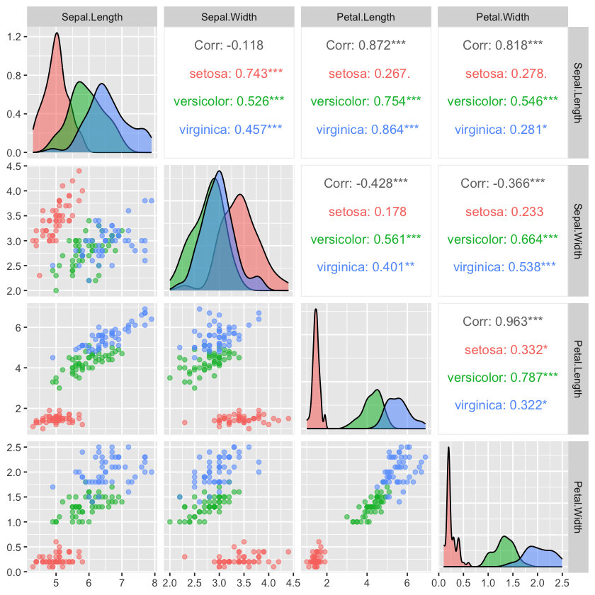

Code

Quarto enables you to weave together content and executable code into a finished document. To learn more about Quarto see https://quarto.org.
Quarto files using the jupyter engine cannot mix languages. 1. Create one Quarto file for each language and one main.qmd: - main.qmd - does not have any code chunks, only prose and embed shortcodes - has the engine option set to knitr in its YAML header - the other Quarto files - do not have any prose, only code - have the YAML header engine option set to jupyter and the relevant language 2. Create Jupyter notebooks from the Quarto files 3. Keep them all in sync with one of the following options a. Convert the Quarto files into Jupyter notebooks and work in the notebooks b. Output the Quarto files to Jupyter notebooks 3. Embed cells from the Jupyter notebooks in main.qmd 4. Generate all output files from main.qmd
you need content between these.